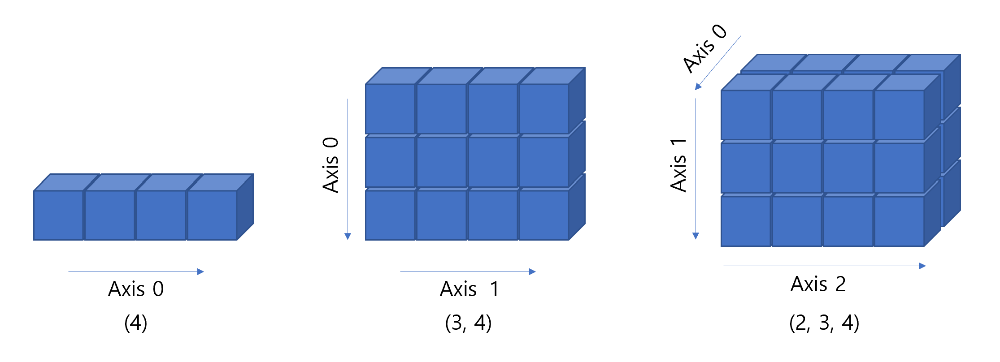
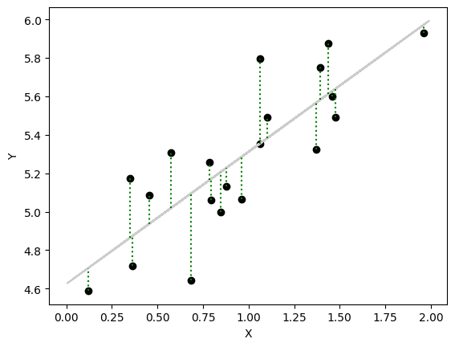
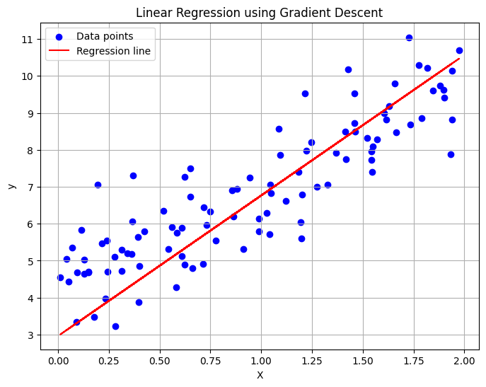
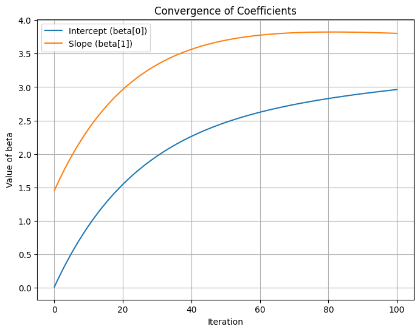
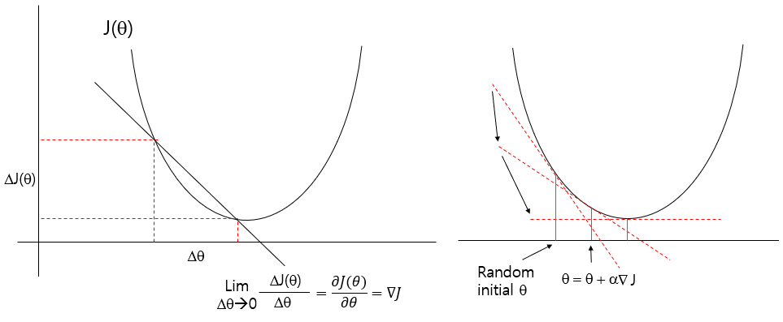

## install google.colab
#!pip install gdown
#import gdown
#gdown.download("https://drive.google.com/uc?id=<file_id>", "output.file", quiet=False)2 Day1 Optimization
- colab working directory
2.1 Introduction of Google Colab
2.1.0.1 Access Google Colab
- Go to Google Colab in your web browser.
- Sign in with your Google account.
2.1.0.2 Create a New Notebook
- Click on
File->New Notebookto create a new notebook.
2.1.0.3 Install Required Libraries
Google Colab comes with many libraries pre-installed, but you might need to install some additional ones, such as biopython and scikit-bio. You can do this using the !pip install command directly in a cell.
!pip install biopython scikit-bio matplotlib!pip install scikit-bio2.1.0.4 Import Libraries and Verify Installation
In a new code cell, import the libraries to ensure they are installed correctly.
# Importing necessary libraries
import Bio
import skbio
print("Biopython version:", Bio.__version__)
print("scikit-bio version:", skbio.__version__)Biopython version: 1.84
scikit-bio version: 0.6.22.2 NumPy
NumPy is a powerful library for numerical operations and handling arrays.
2.2.1 Basics of NumPy
Installation:
!pip install numpyimport numpy as np
# Creating a 1D array
arr1 = np.array([1, 2, 3, 4, 5])
# Creating a 2D array
arr2 = np.array([[1, 2, 3], [4, 5, 6]])
print(arr1)
print(arr2)
# Element-wise operations
arr3 = arr1 * 2
print(arr3)
# Mathematical functions
print(np.sqrt(arr1))[1 2 3 4 5]
[[1 2 3]
[4 5 6]]
[ 2 4 6 8 10]
[1. 1.41421356 1.73205081 2. 2.23606798]2.2.1.1 Numpy datatype ndarray
- Python library for handling matrices and multidimensional arrays
- Allows only data of the same type
- More than 20 times faster than lists
import numpy as np
display(np.ones(4))
display(np.ones((3, 4)))
display(np.ones((2, 3, 4)))
np.shape(np.ones((2, 3, 4)))array([1., 1., 1., 1.])array([[1., 1., 1., 1.],
[1., 1., 1., 1.],
[1., 1., 1., 1.]])array([[[1., 1., 1., 1.],
[1., 1., 1., 1.],
[1., 1., 1., 1.]],
[[1., 1., 1., 1.],
[1., 1., 1., 1.],
[1., 1., 1., 1.]]])(2, 3, 4)
- Create numpy objects
import numpy as np
arr = [1, 2, 3]
print(arr)
print(type(arr))
a = np.array([1,2,3])
print(a)
print(a.dtype)
print(a.shape)
print(type(a))[1, 2, 3]
<class 'list'>
[1 2 3]
int64
(3,)
<class 'numpy.ndarray'>arr2 = np.array([[1,2,3], [4,5,6]])
print(arr2)
print(type(arr2))
print(arr2.shape)
print(arr2.dtype)[[1 2 3]
[4 5 6]]
<class 'numpy.ndarray'>
(2, 3)
int64NumPy data types
- Signed integers: int (8, 16, 32, 64)
- Unsigned integers: uint (8, 16, 32, 64)
- Floating point numbers: float (16, 32, 64, 128)
- Complex numbers: complex (64, 128, 256)
- Boolean: bool
- String: string_
- Python object: object
- Unicode: unicode_
np.zeros(), np.ones(), np.arange()
Broadcasting: A set of rules that allow arrays of different shapes to be used together in arithmetic operations without explicitly copying data
a = np.arange(1, 10).reshape(3,3) # [1, 10)
print(a)
a = np.ones((3,4), dtype=np.int16)
b = np.ones((3,4), dtype=np.int16)
print(a)
print(b)
print(a+b)
print(a-b)[[1 2 3]
[4 5 6]
[7 8 9]]
[[1 1 1 1]
[1 1 1 1]
[1 1 1 1]]
[[1 1 1 1]
[1 1 1 1]
[1 1 1 1]]
[[2 2 2 2]
[2 2 2 2]
[2 2 2 2]]
[[0 0 0 0]
[0 0 0 0]
[0 0 0 0]]a = np.array([[1, 2, 3],
[4, 5, 6]]) # shape (2,3)
b = np.array([10, 20, 30]) # shape (3,)
result = a + b
print(result)[[11 22 33]
[14 25 36]]- numpy built-in functions
- np.sqrt()
- np.log()
- np.square()
- np.log()
- np.ceil()
- np.floor()
- np.isnan()
- np.sum()
- np.mean()
- np.std()
- np.min()
2.3 Simple linear regression
Model
\[ y_i = b_0 + b_1 x_i + \epsilon_i \text{ where } \epsilon_i \sim \text{ iid } N(0, \sigma^2) \]parameters
\[ \theta = \{ b_0, b_1 \} \]
- Find \(\theta\) that minimize residuals
\[ \sum_{i=i}^n r_i^2 = \sum_{i=1}^n (y_i - \hat{y}_i)^2 \\ \sum_{i=1}^n (y_i - \hat{b_1}x_i - \hat{b_0})^2 \]
- residuals: difference between sample observed and estimated values
import numpy as np
np.random.seed(123)
X = 2 * np.random.rand(20, 1)
Y = 4 + X*0.8 + np.random.rand(20, 1)
X_b = np.c_[np.ones(len(X)), X]
# print(X)
theta_best = np.linalg.inv(X_b.T @ X_b) @ (X_b.T) @ Y
Y_pred_org = X_b @ theta_best
# print(theta_best)
X_new = 2 * np.random.rand(100, 1)
X_new_b = np.c_[np.ones(len(X_new)), X_new]
Y_pred = X_new_b @ theta_best
import matplotlib.pyplot as plt
plt.scatter(X, Y, color="#000000")
plt.plot(X_new, Y_pred, color='#cccccc', label='Predictions')
# Plot residuals
for i in range(len(Y)):
plt.vlines(x=X[i], ymin=min(Y[i], Y_pred_org[i]), ymax=max(Y[i], Y_pred_org[i]), color='green', linestyle='dotted')
plt.xlabel('X')
plt.ylabel('Y')
plt.plot()
plt.show()
2.3.1 Ordinary least sequare (OLS)
- Model
\[ y_i = b_0 + b_1 x_i + \epsilon_i \text{ where } \epsilon_i \sim \text{ iid } N(0, \sigma^2), i = 1, 2, ..., n \]
\[ Y = X \beta + \epsilon \]
\[\begin{equation} \begin{bmatrix} y_1 \\ y_2 \\ ... \\ y_n \end{bmatrix} = \begin{pmatrix} 1 \ \ x_1 \\ 1 \ \ x_2 \\ ... \\ 1 \ \ x_n \end{pmatrix} \begin{pmatrix} b_0 \\ b_1 \end{pmatrix} + \begin{pmatrix} \epsilon_1 \\ \epsilon_2 \\ ... \\ \epsilon_n \end{pmatrix} \end{equation}\]
\[ \mathbf{\epsilon} = Y - X\beta \]
- Residual Sum of Squares (RSS)
\[ RSS = (Y-X\beta)^T(Y-X\beta) \]
- Take the gradient with respect to \(\beta\) and set it to zero (Normal equation)
\[ \frac{\partial RSS}{\partial \beta} = -2 X^T Y + 2 X^T X \beta = 0 \]
- Solve for \(\beta\) if \((X^TX)^{-1}\) exists
\[ (X^T X) \beta = X^T Y \]
\[ \hat{\beta} = (X^T X)^{-1} X^T Y \]
2.3.2 Maximum Likelihood Estimation (MLE)
Details: https://statproofbook.github.io/P/slr-mle.html
Consider the regression as a joint probability model
Reasons to use
- This framework is applicable to other complex models (non-linear, neural network)
Bayes rule where \(D\) is data, \(\theta\) is parameter
\[ p(\theta | D) = \frac{p(D|\theta) p(\theta)}{p(D)} \]
\[ \text{where $p(\theta|D)$, $p(D|\theta)$, $p(\theta)$ are posterior, likelihood and prior, respectively} \]
\[ p(\theta | D) \propto p(D|\theta) \]
- Regarding the likelihood, \(p(Y|X, \theta)\) is interpreted as how the behaviour of the response \(Y\) is conditional on the values of the feature, \(X\), and parameters, \(\theta\)
\[ \begin{align} p(Y | X, \theta) = \prod_{i=1}^n p( y_i | x_i, \hat{\theta}) \end{align} \]
- Then, we can ask what is the probability of seeing the data, given a specific set of parameters? (== How the data likely to be observed given the parameters == which parameters maximize the likelihood)
\[ \hat{\theta} = \text{argmax}_\theta \text{ log } \sum_{i=1}^n p( y_i | x_i, \theta) \]
- For \(p(y_i | x_i, \theta)\), we have assumption that all feature vectors are iid
\[ Y \sim N(X\beta, \sigma) \]
\[ \begin{align} p( y_i | x_i, \theta) &= N(y_i; X\beta, \sigma^2) \\ &= \frac{1}{\sqrt{2\pi \sigma^2}} \exp{\left( - \frac{(y_i - b_0 - b_1 x_i)^2}{2 \sigma^2} \right)} \end{align} \]
- Log likelihood (LL) function
\[ \begin{align} LL(\theta) &= \text{ log } \left( \prod_{i=1}^n p( y_i | x_i, \theta) \right) \\ &= \text{ log } \left( \prod_{i=1}^n \frac{1}{\sqrt{2\pi \sigma^2}} \exp{ \left(- \frac{(y_i - b_0 - b_1 x_i)^2}{2 \sigma^2} \right)} \right) \\ &= \text{ log } \left( \frac{1}{\sqrt{(2\pi\sigma^2)^n}} \exp{ \left( - \frac{1}{2\sigma^2} \sum_{i=1}^n (y_i - b_0 - b_1 x_i)^2 \right)} \right) \\ &= - \frac{n}{2} \log(2\pi) - \frac{n}{2} \log(\sigma^2) - \frac{1}{2\sigma^2} \sum_{i=1}^n (y_i - b_0 - b_1 x_i)^2 \end{align} \]
- Take the gradient with respect to \(\beta\) and set it to zero (OLS)
\[ \frac{\partial LL(b_0, b_1, \sigma^2)}{\partial b_0} = \frac{1}{\sigma^2} \sum_{i=1}^n (y_i - b_0 - b_1 x_i) \]
\[ \begin{align} \frac{\partial LL(\hat{b}_0, \hat{b}_1, \sigma^2)}{\partial b_0} = 0 \\ \sum_{i=1}^n (y_i - \hat{b}_0 - \hat{b}_1 x_i) = 0 \\ \hat{b}_0 = \frac{1}{n}\sum_{i=1}^n y_i - \hat{b}_1 \frac{1}{n} \sum_{i=1}^n x_i \\ \end{align} \]
\[ \frac{\partial LL(\hat{b}_0, b_1, \sigma^2)}{\partial b_1} = \frac{1}{\sigma^2} \sum_{i=1}^n (x_i y_i - \hat{b}_0 x_i - b_1 x_i^2) \]
\[ \begin{align} \frac{\partial LL(\hat{b}_0, \hat{b}_1, \sigma^2)}{\partial b_1} = 0 \\ \hat{b}_1 = \frac{\sum_{i=1}^n (x_i - \bar{x}) (y_i - \bar{y})}{\sum_{i=1}^n (x_i - \bar{x})^2 } \end{align} \]
- Maximize with respect to \(\sigma^2\)
\[ \frac{\partial LL(\hat{b}_0, \hat{b}_1, \sigma^2)}{\partial \sigma^2} = - \frac{n}{2 \sigma^2} + \frac{1}{2 (\sigma^2)^2} \sum_{i=1}^n (y_i - \hat{b}_0 - \hat{b}_1 x_i)^2 \]
\[ \frac{\partial LL(\hat{b}_0, \hat{b}_1, \hat{\sigma}^2)}{\partial \sigma^2} = 0 \\ \hat{\sigma}^2 = \frac{1}{n} \sum_{i=1}^n (y_i - \hat{b}_0 - \hat{b}_1 x_i)^2 \]
- In linear regression, MLE naturally leads to the OLS solution under the assumption of normally distributed residuals.
\[ \hat{\beta} = (X^T X)^{-1} X^T Y \]
\[ \hat{\sigma}^2 = \frac{1}{n} (Y-X\beta)^T (Y-X\beta) \]
- However, MLE’s flexibility (e.g. customizable likelihood) extends beyond linear models, making it indispensable for logistic regression, mixture models, and modern deep learning frameworks.
2.3.3 Gradient Decent
An iterative optimization algorithm for adjusting \(\beta\) by minimizing a cost function. In linear regression, the cost function is the Mean Squared Error (MSE) under the assumption of normally distributed residuals.
Define a cost function \(J(\theta)\)
\[ LL(\theta) = - \frac{n}{2} \log(2\pi) - \frac{n}{2} \log(\sigma^2) - \frac{1}{2\sigma^2} \sum_{i=1}^n (y_i - b_0 - b_1 x_i)^2 \]
\[ J(\beta) = \sum_{i=1}^n (y_i - b_0 - b_1 x_i)^2 \]
- matrix notation
\[ J(\beta) = || Y - X\beta ||^2 = (Y - X\beta)^T(Y - X\beta) \]
- L1 norm, L2 norm (a metric for length or magnitude of a vector/matrix) \[ ||X||_1 = \sum_{i}^n |x_i| \]
\[ ||X||_2 = \sqrt{\sum_i^n x_i^2} \]
\[ J(\beta) = Y^T Y - 2 Y^T X \beta + \beta^T X^T X \beta \]
- Gradient of the cost function
\[ \nabla_\beta J(\beta) = \frac{\partial J(\beta)}{\partial \beta} \]
\[ \begin{align} \nabla_\beta J(\beta) &= 0 - 2 X^T Y + 2 X^T X \beta \\ &= - 2 X^T(Y-X\beta) \end{align} \]
- parameter update rule
\[ \beta^{(t+1)} = \beta^{(t)} - \alpha \nabla_\beta J(\beta) \text{ where } \alpha \text{ is learning rate} \]
import numpy as np
import matplotlib.pyplot as plt
# Generate synthetic data
np.random.seed(42)
X = 2 * np.random.rand(100, 1) # 100 samples, 1 feature from [0, 1) uniform distribution
y = 4 + 3 * X + np.random.randn(100, 1) # y = 4 + 3X + noise (Gaussian noise)
# Add bias term (intercept)
X_b = np.c_[np.ones((X.shape[0], 1)), X]
# Initialize parameters
beta = np.random.randn(2, 1) # Random initial coefficients
learning_rate = 0.01
n_iterations = 100
m = X_b.shape[0] # Number of samples
beta_updates = [beta.copy()]
# Gradient Descent
for iteration in range(n_iterations):
gradients = -2/m * X_b.T @ (y - X_b @ beta) # Compute gradient
beta = beta - learning_rate * gradients # Update parameters
beta_updates.append(beta.copy())
# Final parameters
print("Estimated coefficients (beta):", beta)
# Predictions
y_pred = X_b @ beta
# Plot the data and regression line
plt.figure(figsize=(8, 6))
plt.scatter(X, y, color="blue", label="Data points")
plt.plot(X, y_pred, color="red", label="Regression line")
plt.xlabel("X")
plt.ylabel("y")
plt.title("Linear Regression using Gradient Descent")
plt.legend()
plt.grid(True)
plt.show()Estimated coefficients (beta): [[2.96262018]
[3.80192916]]
# Visualize beta updates
for i, beta in enumerate(beta_updates):
print(f"Iteration {i}: beta = {beta.flatten()}")
# Plot convergence of coefficients
beta_updates = np.array(beta_updates).squeeze()
plt.figure(figsize=(8, 6))
plt.plot(range(n_iterations + 1), beta_updates[:, 0], label='Intercept (beta[0])')
plt.plot(range(n_iterations + 1), beta_updates[:, 1], label='Slope (beta[1])')
plt.xlabel('Iteration')
plt.ylabel('Value of beta')
plt.title('Convergence of Coefficients')
plt.legend()
plt.grid(True)
plt.show()Iteration 0: beta = [0.01300189 1.45353408]
Iteration 1: beta = [0.12180499 1.56507648]
Iteration 2: beta = [0.22633422 1.67181808]
Iteration 3: beta = [0.32676535 1.77395782]
Iteration 4: beta = [0.42326689 1.8716864 ]
Iteration 5: beta = [0.5160004 1.96518667]
Iteration 6: beta = [0.60512075 2.05463391]
Iteration 7: beta = [0.69077645 2.14019616]
Iteration 8: beta = [0.77310984 2.22203453]
Iteration 9: beta = [0.85225741 2.30030345]
Iteration 10: beta = [0.92835001 2.37515099]
Iteration 11: beta = [1.00151308 2.44671909]
Iteration 12: beta = [1.0718669 2.51514384]
Iteration 13: beta = [1.13952675 2.58055569]
Iteration 14: beta = [1.20460319 2.64307972]
Iteration 15: beta = [1.26720221 2.70283582]
Iteration 16: beta = [1.32742539 2.75993895]
Iteration 17: beta = [1.38537016 2.81449929]
Iteration 18: beta = [1.4411299 2.8666225]
Iteration 19: beta = [1.49479416 2.91640985]
Iteration 20: beta = [1.54644877 2.96395843]
Iteration 21: beta = [1.59617603 3.00936133]
Iteration 22: beta = [1.64405484 3.05270779]
Iteration 23: beta = [1.69016085 3.09408334]
Iteration 24: beta = [1.73456657 3.13357001]
Iteration 25: beta = [1.77734155 3.17124641]
Iteration 26: beta = [1.81855245 3.20718793]
Iteration 27: beta = [1.85826316 3.24146681]
Iteration 28: beta = [1.89653497 3.27415234]
Iteration 29: beta = [1.93342661 3.30531092]
Iteration 30: beta = [1.96899442 3.33500621]
Iteration 31: beta = [2.00329239 3.36329925]
Iteration 32: beta = [2.03637228 3.39024855]
Iteration 33: beta = [2.06828373 3.4159102 ]
Iteration 34: beta = [2.09907433 3.44033798]
Iteration 35: beta = [2.1287897 3.46358343]
Iteration 36: beta = [2.15747358 3.48569598]
Iteration 37: beta = [2.1851679 3.506723 ]
Iteration 38: beta = [2.21191288 3.52670991]
Iteration 39: beta = [2.23774706 3.54570024]
Iteration 40: beta = [2.26270741 3.56373574]
Iteration 41: beta = [2.28682934 3.58085643]
Iteration 42: beta = [2.31014685 3.59710066]
Iteration 43: beta = [2.3326925 3.6125052]
Iteration 44: beta = [2.35449751 3.62710531]
Iteration 45: beta = [2.37559184 3.64093478]
Iteration 46: beta = [2.39600419 3.65402601]
Iteration 47: beta = [2.41576208 3.66641005]
Iteration 48: beta = [2.43489191 3.67811668]
Iteration 49: beta = [2.45341896 3.68917444]
Iteration 50: beta = [2.47136752 3.69961069]
Iteration 51: beta = [2.48876082 3.70945165]
Iteration 52: beta = [2.50562118 3.71872248]
Iteration 53: beta = [2.52196997 3.72744726]
Iteration 54: beta = [2.53782769 3.73564912]
Iteration 55: beta = [2.55321401 3.74335019]
Iteration 56: beta = [2.56814776 3.75057171]
Iteration 57: beta = [2.58264703 3.75733403]
Iteration 58: beta = [2.59672912 3.76365667]
Iteration 59: beta = [2.61041067 3.76955833]
Iteration 60: beta = [2.62370759 3.77505693]
Iteration 61: beta = [2.63663515 3.78016967]
Iteration 62: beta = [2.64920801 3.78491302]
Iteration 63: beta = [2.66144021 3.78930278]
Iteration 64: beta = [2.6733452 3.79335407]
Iteration 65: beta = [2.68493589 3.79708142]
Iteration 66: beta = [2.69622467 3.80049874]
Iteration 67: beta = [2.70722341 3.80361935]
Iteration 68: beta = [2.71794348 3.80645605]
Iteration 69: beta = [2.7283958 3.80902108]
Iteration 70: beta = [2.73859083 3.81132618]
Iteration 71: beta = [2.74853861 3.81338263]
Iteration 72: beta = [2.75824876 3.8152012 ]
Iteration 73: beta = [2.7677305 3.81679224]
Iteration 74: beta = [2.77699268 3.81816566]
Iteration 75: beta = [2.78604379 3.81933097]
Iteration 76: beta = [2.79489196 3.82029728]
Iteration 77: beta = [2.803545 3.82107331]
Iteration 78: beta = [2.81201037 3.82166745]
Iteration 79: beta = [2.82029527 3.82208769]
Iteration 80: beta = [2.82840657 3.82234175]
Iteration 81: beta = [2.83635086 3.82243698]
Iteration 82: beta = [2.84413447 3.82238045]
Iteration 83: beta = [2.85176348 3.82217893]
Iteration 84: beta = [2.85924369 3.8218389 ]
Iteration 85: beta = [2.8665807 3.82136659]
Iteration 86: beta = [2.87377985 3.82076795]
Iteration 87: beta = [2.88084627 3.8200487 ]
Iteration 88: beta = [2.8877849 3.81921431]
Iteration 89: beta = [2.89460044 3.81827003]
Iteration 90: beta = [2.90129743 3.81722089]
Iteration 91: beta = [2.90788021 3.8160717 ]
Iteration 92: beta = [2.91435295 3.81482709]
Iteration 93: beta = [2.92071965 3.81349148]
Iteration 94: beta = [2.92698413 3.81206911]
Iteration 95: beta = [2.93315007 3.81056405]
Iteration 96: beta = [2.93922099 3.8089802 ]
Iteration 97: beta = [2.94520029 3.80732128]
Iteration 98: beta = [2.9510912 3.80559087]
Iteration 99: beta = [2.95689684 3.8037924 ]
Iteration 100: beta = [2.96262018 3.80192916]
2.3.3.1 Reasons to use GD instead of MLE, OLS
- Gradient Descent is favored over MLE or OLS in scenarios involving large-scale data, high-dimensional features, non-linear models, or custom loss functions due to its flexibility, efficiency, and scalability. However, for simple, small-scale problems, OLS or MLE may still be preferred for their directness and precision.
2.3.4 Model fitting
- Finding parameters with LSE, MLE, and GD
- GD provides more flexible (non-linear) and scalable (high-dimentional data) way for modeling
- GD procedure
- Set random initial parameters
- Compute gradient that reduces cost
- Parameter update until conversing
